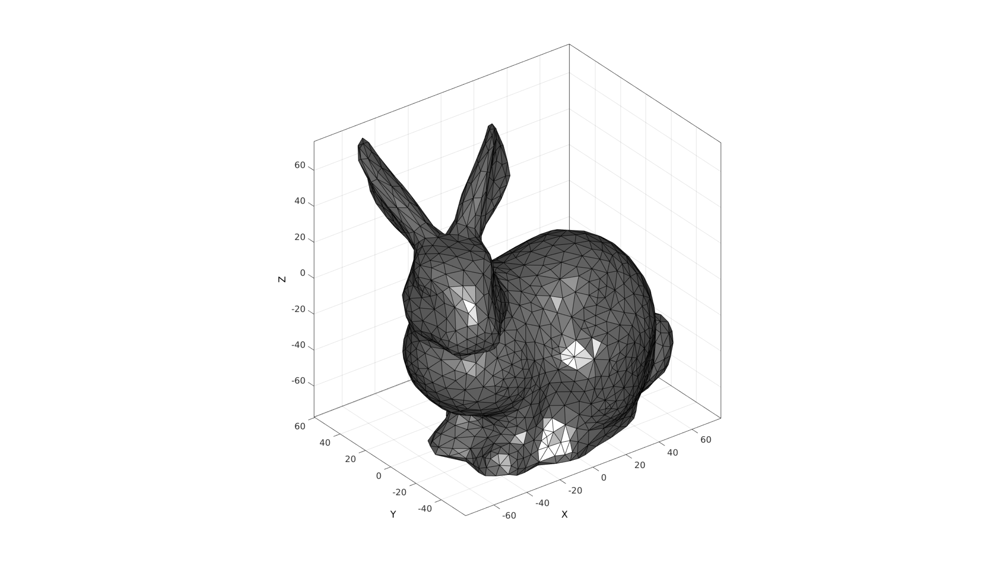
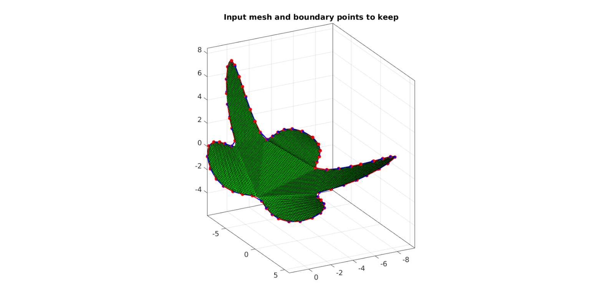
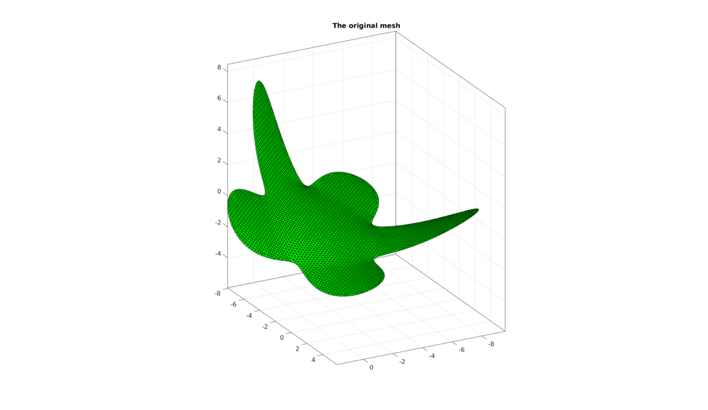
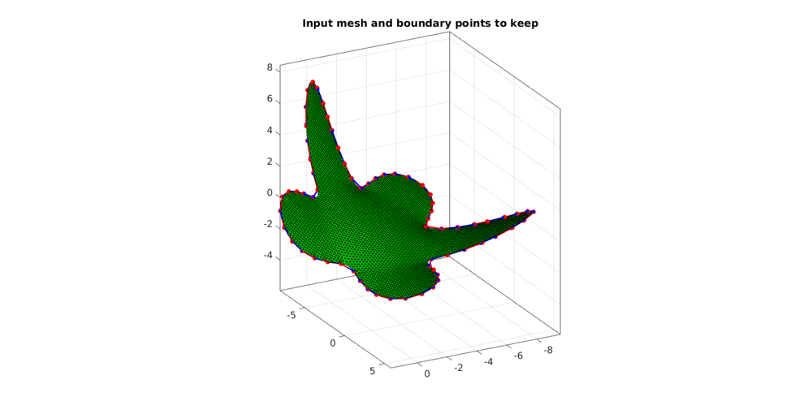

DEMO_geodesic_remeshing
Below is a demonstration for:
- The use of remeshTriSurfDistMap (and subTri and smoothening) for surface remeshing
Contents
- Control parameters
- Creating example surface data
- Merge nodes if required (e.g. in case of STL import)
- Refine input mesh before resampling
- Estimate number of points required given point spacing
- Visualize input mesh
- Get indices of boundary points and get boundary curve
- Get indices of "must points" close to evenly spaced on boundary curve
- Visualize boundary points to keep on input mesh
- Resample input surface geodesically
- Refine output if desired using sub-triangulation
- Get indices of new boundary points and get boundary curve
- Visualize final result
clear; close all; clc;
%Plot settings
fontSize=15;
markerSize=15;
lineWidth=2;
Control parameters
exampleType=1; %Use to switch between different examples switch exampleType case 1 %A fast (~10 seconds) resampling to a coarser geodesic output mesh, without before/after refinement pointSpacing=1; %Desired point spacing nRefineOriginal=0; %Set n>0 to refine the input mesh through sub-triangulation before resampling nRefineOutput=0; %Number of output refinement steps case 2 %Same as 1 but with resampling/smoothening of the output surface (is mast and may be sufficient) %A fast resampling to coarse geodesic mesh, with refinement of output pointSpacing=1; %Desired point spacing nRefineOriginal=0; %Set n>0 to refine the input mesh through sub-triangulation before resampling nRefineOutput=2; %Number of output refinement steps case 3 %Same as 2 but with more sub-triangulation %A fast resampling to coarse geodesic mesh, with refinement of output pointSpacing=1; %Desired point spacing nRefineOriginal=0; %Set n>0 to refine the input mesh through sub-triangulation before resampling nRefineOutput=3; %Number of output refinement steps case 4 %A reduced point spacing requires a refined input surface, slower example (~5 minutes) pointSpacing=0.5; %Desired point spacing nRefineOriginal=1; %Set n>0 to refine the input mesh through sub-triangulation before resampling nRefineOutput=0; %Number of output refinement steps end mergeNodes=0; %Use to force sharing of nodes with nearly equal coordinates across faces nSmoothIterations=15; %Number of smoothening steps per refinement step (only used for output sub-triangulation)
Creating example surface data
%Boundary 1 ns=150; t=linspace(0,2*pi,ns); t=t(1:end-1); r=6+2.*sin(5*t); [x,y] = pol2cart(t,r); z=1/10*x.^2; V1=[x(:) y(:) z(:)]; %Create Euler angles to set directions E=[0.25*pi -0.25*pi 0]; [R,~]=euler2DCM(E); %The true directions for X, Y and Z axis V1=(R*V1')'; %Rotate polygon regionCell={V1}; %A region between V1 and V2 (V2 forms a hole inside V1) % Meshing the region (See also |regionTriMesh2D|) [F,V]=regionTriMesh3D(regionCell,0.2,1,'linear');
Merge nodes if required (e.g. in case of STL import)
In some cases nodes are not shared for adjacent triangles (e.g. STL imported geometry). In this case merging is required.
if mergeNodes==1 decPlaceRound=6; %Decimal place for rounding [~,indUni,indF]=unique(pround(V,decPlaceRound),'rows'); %Get indices for unique point set V=V(indUni,:); %Keep only unique F=indF(F); %Fix indices in faces matrix end
Refine input mesh before resampling
Refining the input mesh is required if the intended mesh density exceeds that of the desired output mesh density. For each iteration the triangle edges are split in half while the triangle faces are split into 4. The mesh becomes very dense, very quickly so do not over do this. Subtri works through triangle splitting and is linear in the sense that it leaves input points unaltered but adds intermediate points on all input edges.
if nRefineOriginal>0 for q=1:1:nRefineOriginal [F,V]=subtri(F,V,1); %Refine input mesh through sub-triangulation end end
Estimate number of points required given point spacing
numPointsInput=size(V,1); %Number of points in the original data [A]=patch_area(F,V); %Areas of current faces totalArea=sum(A(:)); %Total area l=sqrt(totalArea); %Width or length of square with same size np=round((l./pointSpacing).^2); %Point spacing for mesh in virtual square
Visualize input mesh
cFigure; hold on; title('The original mesh'); patch('Faces',F,'Vertices',V,'FaceColor','g','EdgeColor','k'); view(3); axis equal; axis tight; grid on; box on; view(152,22); set(gca,'FontSize',fontSize); drawnow; % [hp]=patchNormPlot(F,V);
Get indices of boundary points and get boundary curve
%First get triangulation class representation TR=triangulation(F,V); [indEdges] = freeBoundary(TR); %The list of free edges %Reorder edge list to obtain indices describing continuous curve (assuming %a single boundary, need to group first and do reordering on each group if %multiple boundaries exist) [indList]=edgeListToCurve(indEdges); indList=indList(1:end-1);
Get indices of "must points" close to evenly spaced on boundary curve
D=pathLength(V(indList,:)); %The cummulative curve length boundaryLength=max(D); %The total curve length nb=round(boundaryLength./pointSpacing); %Number of points to keep on boundary [Vb] = evenlySampleCurve(V(indList,:),nb,'pchip',1); [~,minIND]=minDist(Vb,V(indList,:)); indListSelect=indList(minIND); %List of points to keep
Visualize boundary points to keep on input mesh
cFigure; hold on; title('Input mesh and boundary points to keep') patch('Faces',F,'Vertices',V,'FaceColor','g','EdgeColor','k'); plotV(V(indListSelect,:),'r.-','MarkerSize',25,'LineWidth',lineWidth); plotV(Vb,'b.-','MarkerSize',markerSize,'LineWidth',lineWidth); view(3); axis equal; axis tight; grid on; box on; view(152,22); set(gca,'FontSize',fontSize); drawnow;
Resample input surface geodesically
Geodesic re-sampling works by taking a point on the surface and calculating the distance to all other points by marching/propagating across the mesh. The point on the mesh furthest away from the input point (or points) is then added to the list. Then new distances are computed and the furthest point is again added to this list. Therefore using this iterative process equally spaced point sets can be obtained. The mesh works by sampling the input mesh to a coarser homogeneous mesh. If the input mesh is too coarse refine it first using subTri (subTri does not alter input geometry). This method does not alter the geometry but simply samples a subset of the input points. So the output point set (or seeds) are all points part of the original input geometry. The region closest to one of the seed points can be viewed as a Voronoi cell. The dual of the Voronoi tesselation is a Delaunay triangulation which gives the output mesh connectivity. The distance marching can be very slow. One tip is to do a coarse resampling and then to sub-triangulate the output.
%Use distance marching method [Fn,Vn,S]=remeshTriSurfDistMap(F,V,numel(indListSelect)+np,indListSelect); %distance based marching
cFigure; hold on; title('Original mesh with seed points and "Voronoi cells"'); % [S]=vertexToFaceMeasure(F,S); patch('Faces',F,'Vertices',V,'FaceColor','flat','CData',S,'EdgeColor','none'); plotV(Vn,'k.','MarkerSize',markerSize); view(3); axis equal; axis tight; grid on; box on; view(152,22); set(gca,'FontSize',fontSize); camlight headlight; cMap=hsv(max(S)); cMap=cMap(randperm(size(cMap,1)),:); colormap(cMap); drawnow;
Refine output if desired using sub-triangulation
if nRefineOutput>0 numOutIni=size(Vn,1); %Refine and smoothen for q=1:1:nRefineOutput %Refine [Fn,Vn]=subtri(Fn,Vn,1); %Refine through splitting %Smoothen refined mesh %First get triangulation class representation TR_n=triangulation(Fn,Vn); [indEdges_n] = freeBoundary(TR_n); %The list of free edges indKeep=1:numOutIni; %Indices for points that should not be moved by smoothening indKeep=unique([indKeep(:);indEdges_n(:)]); %Add boundary points to keep list %Smoothening parameters for smoothening after refinement cPar.Method='HC'; cPar.n=nSmoothIterations; cPar.RigidConstraints=indKeep; %Points to hold on to while smoothening %Smooth while holding on to desired points (here original and boundary) [Vn]=patchSmooth(Fn,Vn,[],cPar); end else indKeep=1:size(Vn,1); end
Get indices of new boundary points and get boundary curve
%First get triangulation class representation TR_n=triangulation(Fn,Vn); [indEdges_n] = freeBoundary(TR_n); %The list of free edges %Reorder edge list to obtain indices describing continuous curve (assuming %a single boundary, need to group first and do reordering on each group if %multiple boundaries exist) [indList_n]=edgeListToCurve(indEdges_n); indList_n=indList_n(1:end-1);
Visualize final result
cFigure; hold on; title('Resampled mesh'); patch('Faces',Fn,'Vertices',Vn,'FaceColor','b','EdgeColor','k'); plotV(Vn(indList_n,:),'r.-','MarkerSize',markerSize,'LineWidth',lineWidth); plotV(Vn(indKeep,:),'y.','MarkerSize',markerSize); %Boundary point of member of original surface view(3); axis equal; axis tight; grid on; box on; view(152,22); set(gca,'FontSize',fontSize); camlight headlight; drawnow;

GIBBON www.gibboncode.org
Kevin Mattheus Moerman, gibbon.toolbox@gmail.com
GIBBON footer text
License: https://github.com/gibbonCode/GIBBON/blob/master/LICENSE
GIBBON: The Geometry and Image-based Bioengineering add-On. A toolbox for image segmentation, image-based modeling, meshing, and finite element analysis.
Copyright (C) 2017 Kevin Mattheus Moerman
This program is free software: you can redistribute it and/or modify it under the terms of the GNU General Public License as published by the Free Software Foundation, either version 3 of the License, or (at your option) any later version.
This program is distributed in the hope that it will be useful, but WITHOUT ANY WARRANTY; without even the implied warranty of MERCHANTABILITY or FITNESS FOR A PARTICULAR PURPOSE. See the GNU General Public License for more details.
You should have received a copy of the GNU General Public License along with this program. If not, see http://www.gnu.org/licenses/.